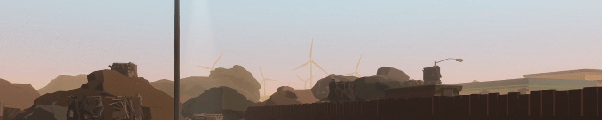

Plasticity
Roles:
Usability Lead

Utilizing player feedback

Testing throughout development

Utilizing recording tools

Plasticity was an undergraduate senior capstone project in the Interactive Media and Games Division at the University of Southern California from 2018-2019.
Dalton was the Usability Lead and spent about a year holding playtests, recording data, and communicating both good and bad news to the rest of the development team.